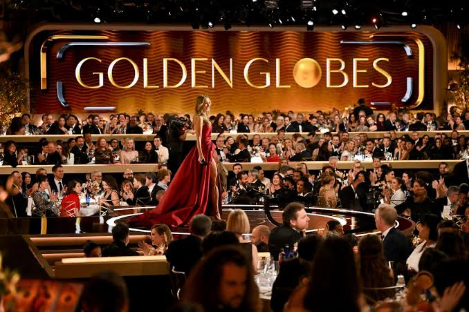

¿Qué son los Golden Globes?
Los Premios Globos de Oro (Golden Globe Awards) son galardones concedidos por los miembros de la Asociación de la Prensa Extranjera de Hollywood (HFPA). Reconocen la excelencia en entregas de cine y televisión, tanto en los Estados Unidos como a nivel internacional.
Iniciados en 1944, se han consolidado como una de las ceremonias más importantes e influyentes de la industria del entretenimiento, a menudo considerados el gran preludio de los Premios Óscar.
¿Por qué se celebran?
El propósito fundamental de los Golden Globes es rendir homenaje al talento cinematográfico y televisivo, destacando el impacto cultural, artístico y narrativo de las producciones del año.
A diferencia de otros premios, unen en una misma gala lo mejor de la pantalla grande y de la televisión, apoyando además causas benéficas y la restauración de películas clásicas a través de los fondos recaudados durante sus eventos.

Ubicación del Evento
Tradicionalmente, la deslumbrante ceremonia tiene lugar en el prestigioso hotel The Beverly Hilton en Beverly Hills, California.
Este emblemático espacio reúne a las figuras más destacadas de Hollywood en una cena de gala íntima y elegante, retransmitida a millones de espectadores alrededor del mundo.
Ganadores Destacados
Los Golden Globes han galardonado a visionarios de la cinematografía global. Figuras como el director mexicano Guillermo del Toro han sido reconocidas en múltiples ocasiones, destacando su triunfo en categorías como Mejor Película Animada por Pinocchio y Mejor Director por La Forma del Agua.